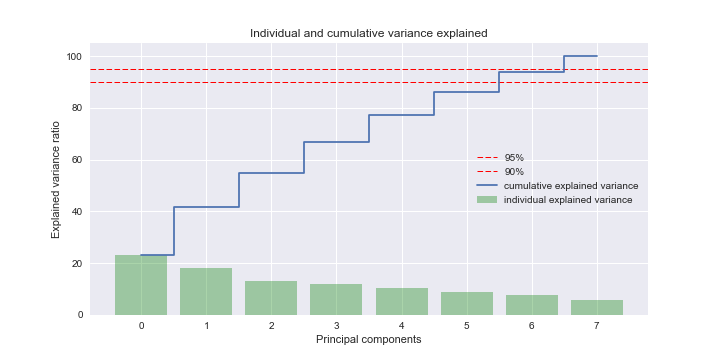
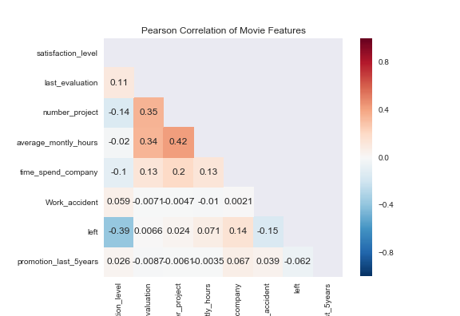
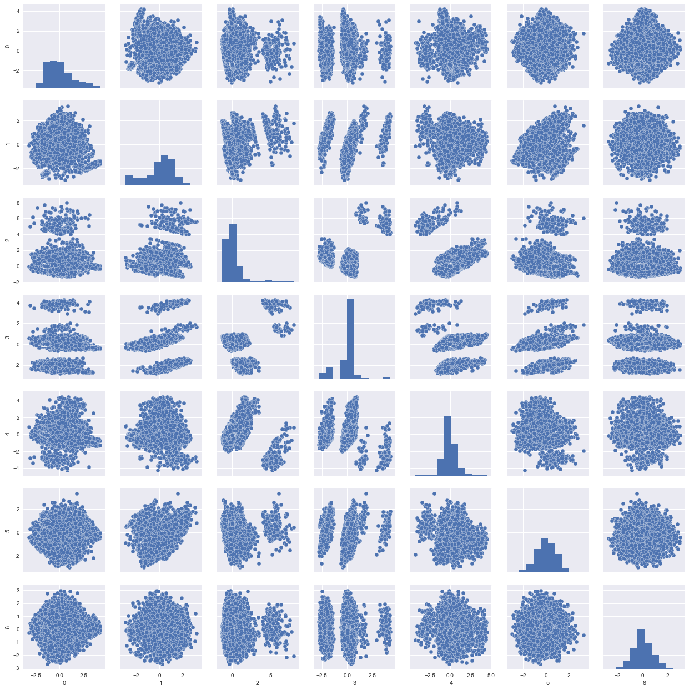
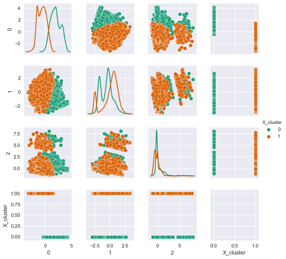
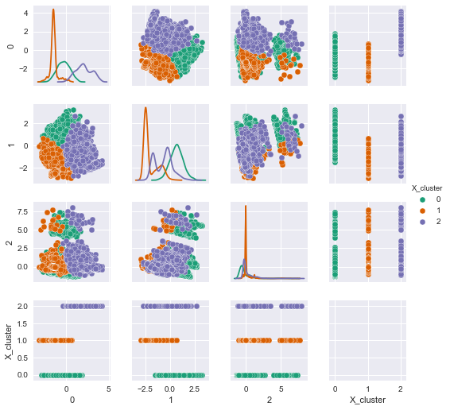
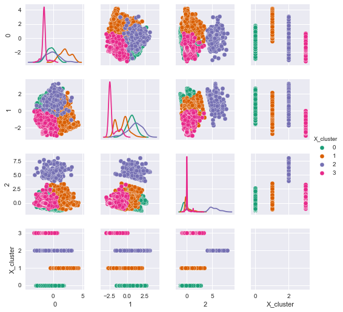

hr_data
This is an auto-generated dataset report!
Dataset summary
Generated data keys: ['raw', 'no_na', 'numerical', 'object', 'numerical_std', 'PCA', 'clustered_2', 'clustered_3', 'clustered_4']
Generated metadata keys: ['n_graph_cluster_pca', 'name', 'n_removed_na', 'covariance', 'eigenvalues', 'eigenvectors', 'eigenvalues_variance_explained', 'components', 'numerical_correlation', 'clusters']
|
satisfaction_level |
last_evaluation |
number_project |
average_montly_hours |
time_spend_company |
Work_accident |
left |
promotion_last_5years |
X_cluster |
| count |
14999.000000 |
14999.000000 |
14999.000000 |
14999.000000 |
14999.000000 |
14999.000000 |
14999.000000 |
14999.000000 |
14999.000000 |
| mean |
0.612834 |
0.716102 |
3.803054 |
201.050337 |
3.498233 |
0.144610 |
0.238083 |
0.021268 |
0.650777 |
| std |
0.248631 |
0.171169 |
1.232592 |
49.943099 |
1.460136 |
0.351719 |
0.425924 |
0.144281 |
1.041503 |
| min |
0.090000 |
0.360000 |
2.000000 |
96.000000 |
2.000000 |
0.000000 |
0.000000 |
0.000000 |
0.000000 |
| 25% |
0.440000 |
0.560000 |
3.000000 |
156.000000 |
3.000000 |
0.000000 |
0.000000 |
0.000000 |
0.000000 |
| 50% |
0.640000 |
0.720000 |
4.000000 |
200.000000 |
3.000000 |
0.000000 |
0.000000 |
0.000000 |
0.000000 |
| 75% |
0.820000 |
0.870000 |
5.000000 |
245.000000 |
4.000000 |
0.000000 |
0.000000 |
0.000000 |
1.000000 |
| max |
1.000000 |
1.000000 |
7.000000 |
310.000000 |
10.000000 |
1.000000 |
1.000000 |
1.000000 |
3.000000 |
Variance explained 90% - 95%
Covariance heatmap with threshold 0.5
Pairwise plot of PCA using 8 principle components
Covariance heatmap with threshold 0.5
Variance explained 90% - 95%
Pairwise plot of PCA using 7 principle components
Variance explained 90% - 95%
Covariance heatmap with threshold 0.5
Pairwise plot of PCA using 7 principle components
K-means clustering with 2 clusters
 K-means clustering with 3 clusters
 K-means clustering with 4 clusters
